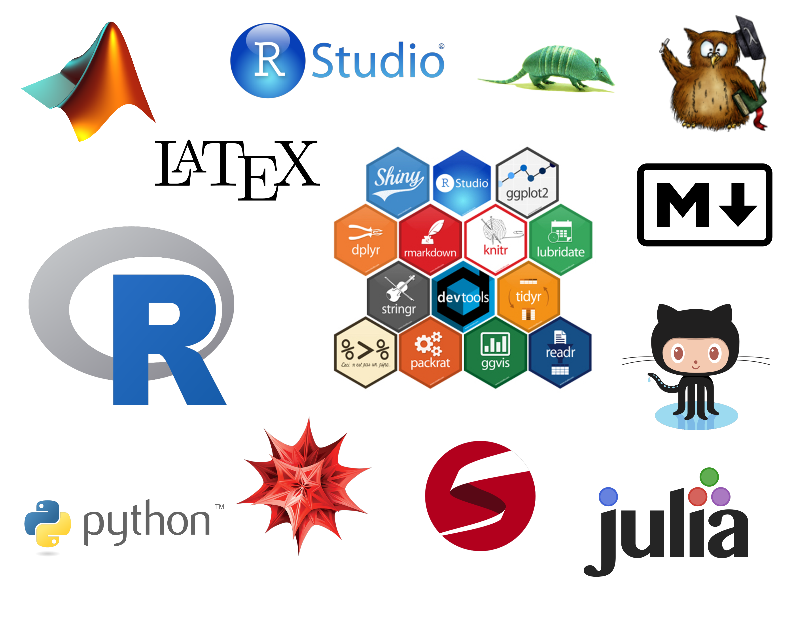

A series of informal sessions among enthusiasts of coding, with a common interest in tools for crunching data, performing statistical analyses and reporting them. Quite R-based but definitely open to other languages/tools of interest.
Members of the Department of Statistics (professors, postdocs, PhD students, MSc students) and of other departments (Mathematics, Economics, Computer Science and Engineering, etc). Late BSc students with interest in coding are also welcome to join.
Biweekly or triweekly sessions, in a day and time to be decided.
At the Department of Statistics. The proportion of meetings in Getafe/Leganés will be according to the proportion of participants from each campus.
Because:
Sessions to be held in a common room equipped with a projector and a large table. (In Getafe: Sala Costas Goutis 10.0.23 or meeting room 10.1.21A). We bring our own laptops to the session. The main topic of the session is communicated by email a week before to all the department(s) and past attendees.
Initially, the sessions are scheduled for 60 minutes, with a strong compromise to keep the duration of the session at this limit.
A possible one is:
We plan to create a blog-webpage where we host the materials for each session as posts. Each post will be solely authored by the presenter, hence providing a proof of participation. Also, the blog-webpage may contain possible follow-ups to the sessions, reporting the topics discussed in points 3 and 4.
The website is likely to be based in knitr-jekyll, which makes possible the creation of R-friendly, elegant and simple webpages. Here are some examples (each blog post is a rmarkdown document):
We are looking for:
These are some ideas about R packages that could be covered in the first sessions:
And here are other more generic topics that could be of interest:
Send an email to coding.club.uc3m@gmail.com